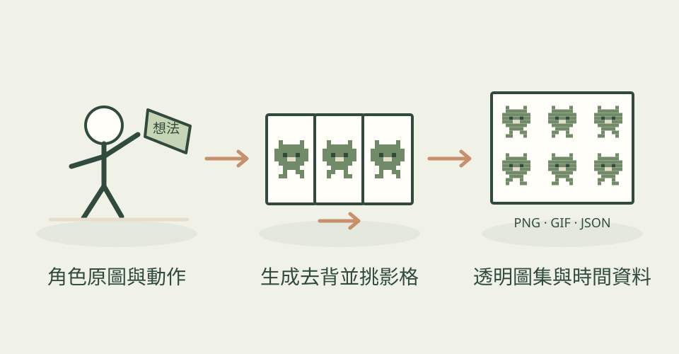

角色圖畫好了，真正放進遊戲前，還需要待機、走路、跳躍和攻擊的連續影格。Sprite Gen 把這些工作串成流程：先按動作生成，再清掉背景、分離姿勢、對齊角色，最後交付遊戲能讀的透明圖集與逐格資料。
它怎麼幫忙
有兩條主要路線。圖集路線把同一角色的動作分批製作，再去背、抽取影格，透過可選的網頁挑選介面剔除不合格姿勢、微調位置與預覽循環。影片路線讓靜態角色先經影片模型產生動作，再找循環週期、轉成透明影格與 GIF／WebP／長條圖。也提供換色、呼吸動態、背景重複貼圖和投影工具。配圖是作者公開的聖騎士攻擊示例，並非本站執行結果。 10 月 30 日核對到 3.9.0：影片切段現在預設偵測連續重複姿勢，使用 RIFE 補上中間影格並重新檢查，報告列出補前與補後的姿勢數／總格數。也可指定較高輸出幀率；沒有 RIFE 時會警告並保留原幀率。像素呼吸新增圓胸與手臂橫移控制，可以用遮罩固定部位，讓手持物整塊跟著移動。
功能快速理解

由角色原圖分動作生成，再去背、對齊與挑選影格，交付透明動畫圖集；本站功能示意，非生成實測。
功能示意・本站繪製 放大查看可以這樣開口
這是一個可依需求修改的委託範例。
用我有權使用的側面小騎士原圖，規劃待機、走路與攻擊三種狀態。先說明生成供應商和費用，固定角色大小、朝右方向與腳底基準；逐狀態預覽，確認臉和武器沒有變形，再交付透明圖集、每格座標和播放時間，另附白底去背檢查與循環 GIF。 若影片走路中途停格，先報告重複姿勢數，預覽補間後腳底是否滑動、武器是否出現殘影；刻意保留的低格率動畫則關閉自動補間。
適合什麼工作
適合獨立遊戲開發者、需要快速做出可玩的角色原型的人，以及手上已有角色原圖、願意逐段檢視動作的美術與工程搭檔。已有圖集也可只使用切圖、去背、換色與匯出工具。
開始之前
- 準備工具
- CPython 3.11+ 與專用虛擬環境、Pillow、NumPy；生成需支援的 Codex／Grok 工具與自己的登入或 API 憑證。影片流程另需 ffmpeg、img2webp；走跑修補與多方向週期對齊使用 RIFE，缺少時會警告並保留原拍攝切法。部分進階臉部流程需要 Node。作者 CI 僅跑 Python 3.14，並非每個版本與作業系統都已測試。 新版自動填補停格與提高輸出幀率也需要 RIFE；可用 --fill-held off 保留原切法。
- 使用成本
- 專案採 Apache-2.0，但角色生圖與影片並非免費保證：作者提供使用既有訂閱登入或自備 API 金鑰的路線，依帳號額度及供應商計費；影片重拍、多方向重做會增加成本。單純處理既有素材可在本機執行，仍有 agent、運算與人工檢視成本。選用 OpenAI API 或 ElevenLabs 聲音功能另有費用，本次沒有呼叫任何生成服務。
- 交付內容
- 透明 sprite-sheet-alpha.png、含影格座標與播放資料的 manifest.json、逐動作透明 GIF／WebP／長條圖、檢查接觸表；可選 Aseprite 相容 JSON 供 Phaser／Flame 等引擎讀取
- 先留意
- 2026-10-29 首次收錄，10 月 30 日實質更新原文至核對的 3.9.0；不是本日首次發布。新版會保留長停頓、辨識出的二拍／三拍動畫與部分首尾影格，補間不合格時可能保留原格並警告；提高幀率也可能退回來源格，不能保證每格都是成功補間。側向辨識可能判錯，生成提示也不保證角色始終朝對方向；鏡像會交換不對稱配件。走跑循環仍需通過實際動態檢查。export-aseprite 產生的是相容 JSON，不是可編輯的 .aseprite 原始檔。作者展示不能當成每次都能得到的品質保證，原圖與第三方角色權利須自行確認。
作者與來源
本文依作者公開說明整理，沒有實際執行這個專案。功能插圖由本站繪製，原作者範例另行標示；並非本站執行技能的測試結果。GitHub 星數為專案總量，觀察時間為 2026年10月30日 08:27（台北時間）。
與前次快照相比增加 23 星；這不是 GitHub Trending 排名。